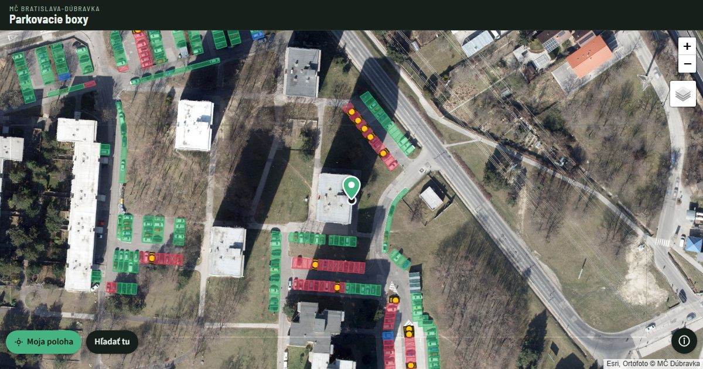

Je toto parkovacie miesto ešte vyhradené?
V Bratislave-Dúbravke zostáva veľa parkovacích boxov označených bielym krížom a tabuľkou s EČV aj po tom, čo sa nájom skončil. Táto neoficiálna mapa podľa vašej polohy ukáže, ktoré boxy v okolí majú podľa verejnej evidencie mestskej časti nájomcu a ktoré označenie je len pozostatok starého vyhradenia.
Otvoriť mapu
Ako to funguje
- Otvorte mapu na mobile a povoľte prístup k polohe. Mapa sa priblíži na vaše okolie a načíta boxy do 200 m.
- Ak polohu nepovolíte alebo ste práve inde, posuňte mapu na miesto, kde chcete parkovať, a ťuknite na „Hľadať tu“.
- Ťuknite na box a zobrazí sa jeho záznam z evidencie: typ, parkovisko, číslo boxu a dátum poslednej úpravy.
Čo znamenajú farby
- Červená – vyhradený box, ktorý má podľa evidencie nájomcu. Tu neparkujte.
- Žltá – vyhradený box, pri ktorom úrad neeviduje nájomcu.
- Zelená – verejné miesto. Biely kríž alebo tabuľka s EČV sú tu len zvyšok starého vyhradenia.
- Modrá – miesto pre držiteľov parkovacieho preukazu ŤZP.
Platí značka, nie mapa
Kým na mieste stojí dopravná značka „vyhradené parkovisko“, je záväzná, aj keď box podľa evidencie nájomcu nemá. Mapu použite ako podklad, keď budete žiadať mestskú časť o odstránenie starého značenia.
Odkiaľ sú údaje
Mapa pri každom otvorení načíta verejnú evidenciu parkovacích boxov MČ Bratislava-Dúbravka, tú istú, z ktorej čerpá oficiálna mapa Doprava a parkovanie. Evidencia pokrýva len Dúbravku. Letecké snímky: ortofoto 2026 © MČ Bratislava-Dúbravka.
Kto za aplikáciou stojí
Aplikáciu vytvoril Jaroslav Brutenic. Nie je to služba mestskej časti. Zdrojový kód je voľne dostupný na GitHube. Ak vaša mestská časť zverejňuje podobné údaje o parkovaní, napíšte mi.